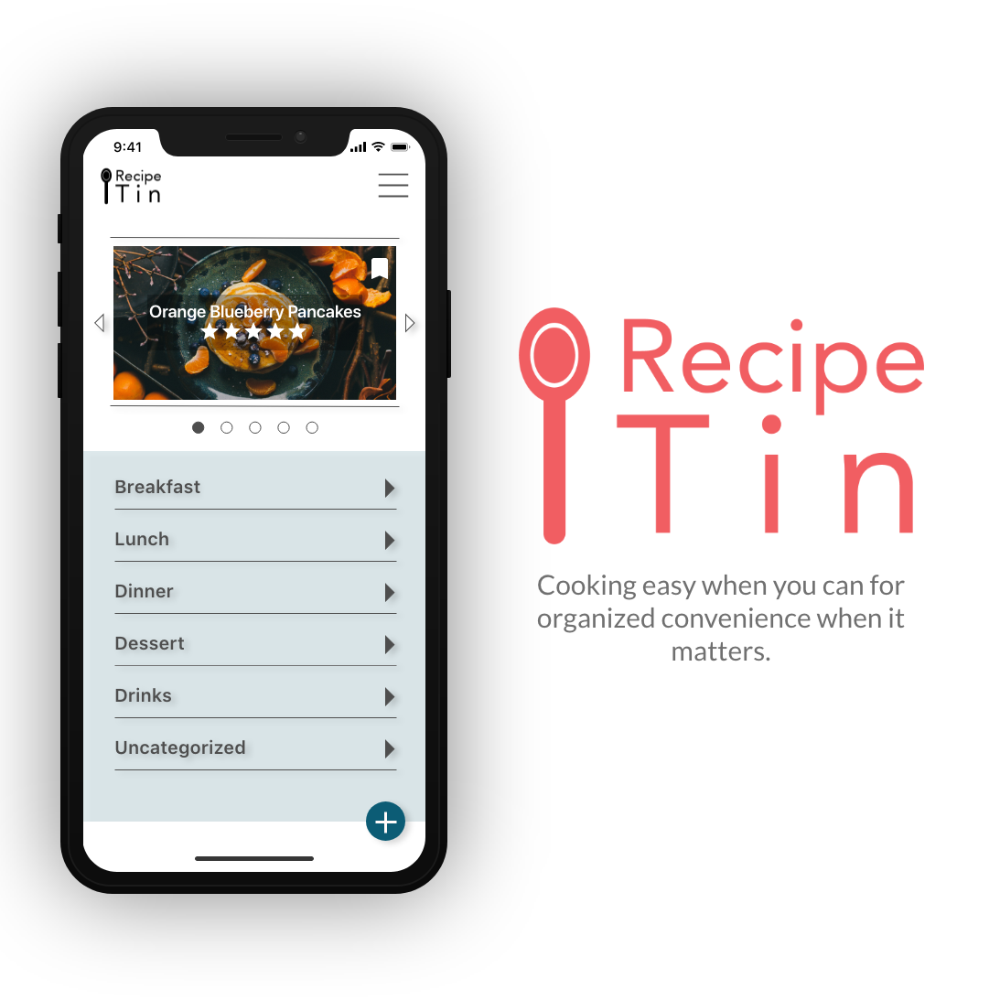
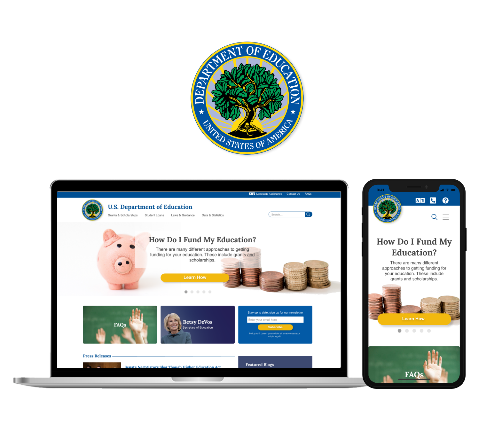

RecipeTin
RecipeTin is a mobile application that is the modern take on collecting recipe cards.
My Role: UX Generalist and Project Manager
Read More
Front Steps Website Redesign
Front Steps is a non-profit in Austin, TX that focuses on solving homelessness in the greater Austin area. In this project, our design team was enlisted to help redesign their website.
My Role: UX/ UI Designer and Project Manager
Read More

U.S. Department of Education Website Redesign
The U.S. Department of Education (DoED) is an organization whose mission is to promote student achievement and preparation for global competitiveness. In this personal project, I redesign their website to match the mental model of a student.
My Role: UX Researcher and UX/UI Designer
Read More